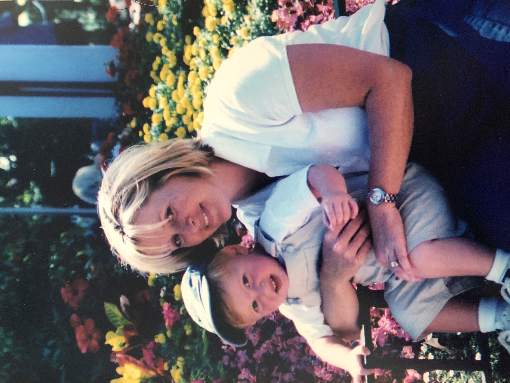
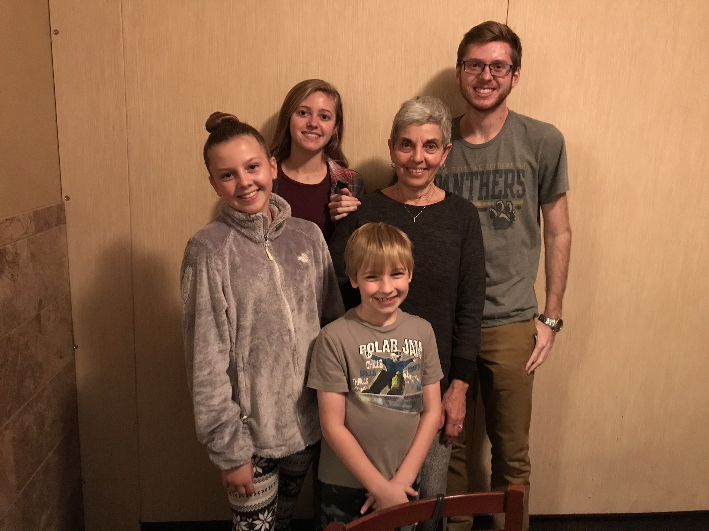
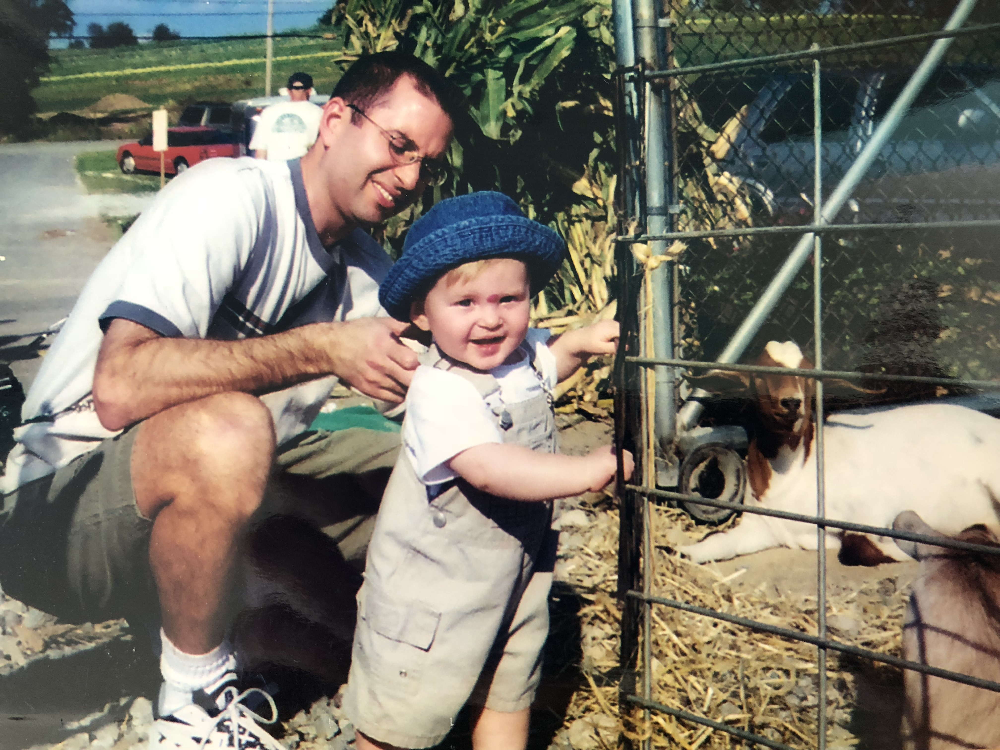
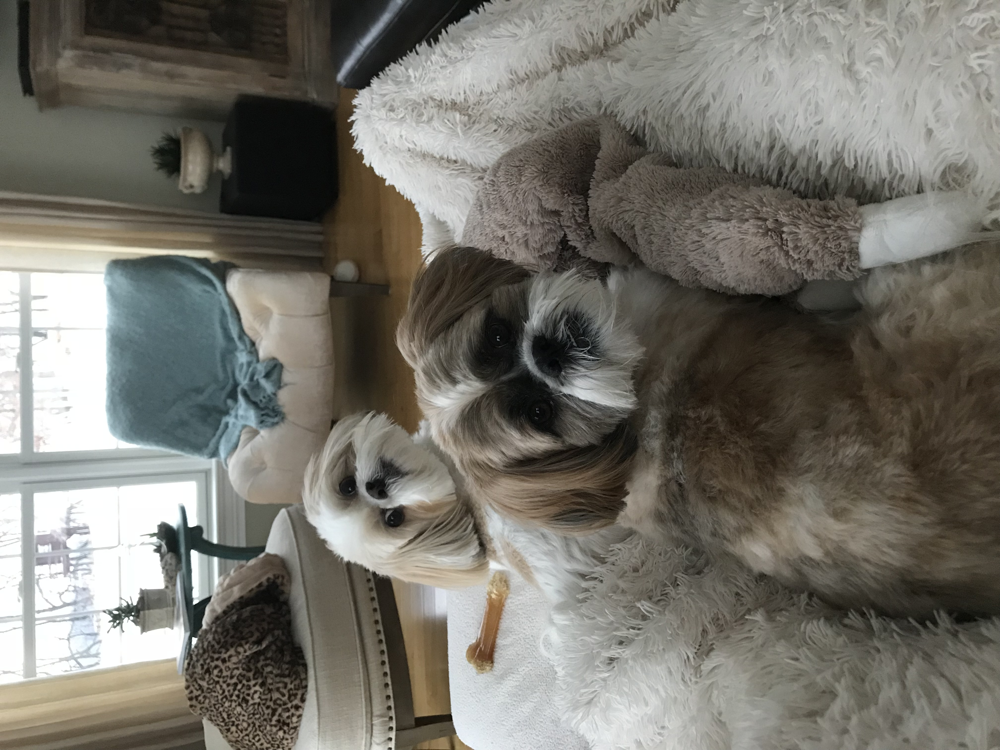
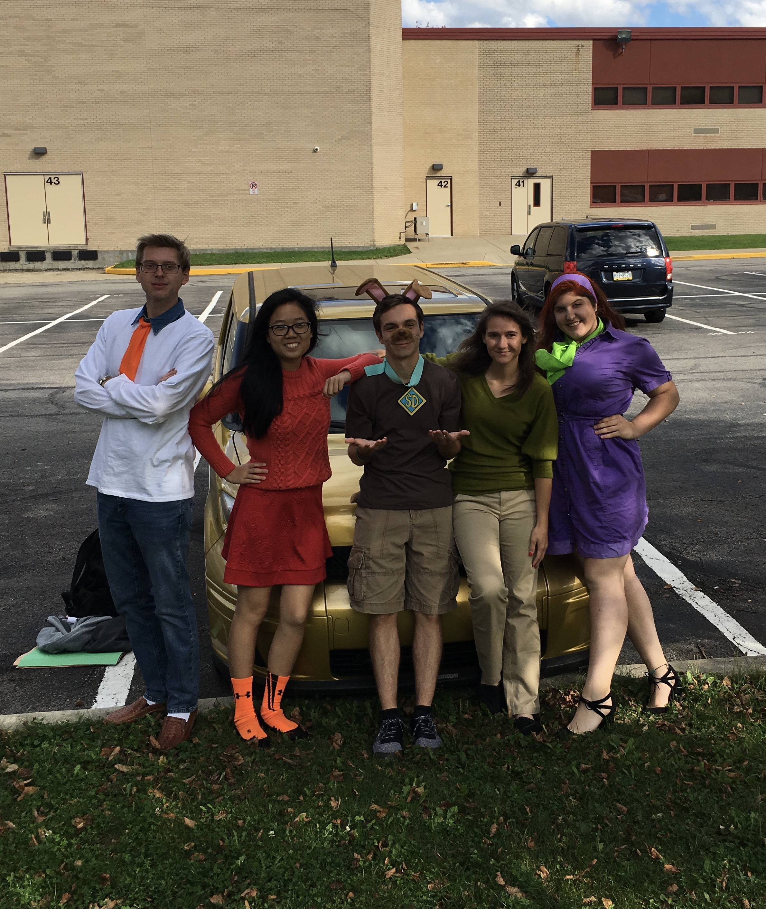
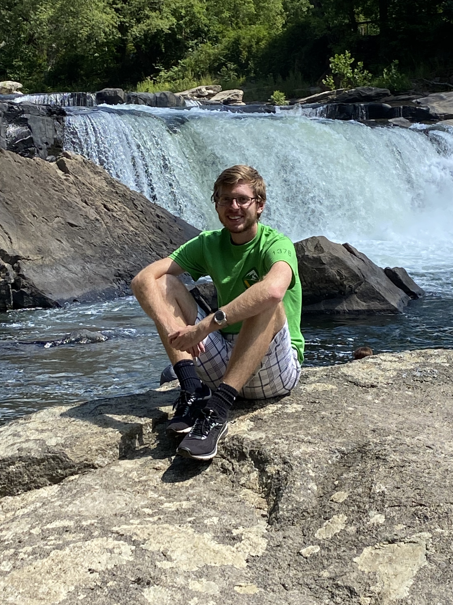
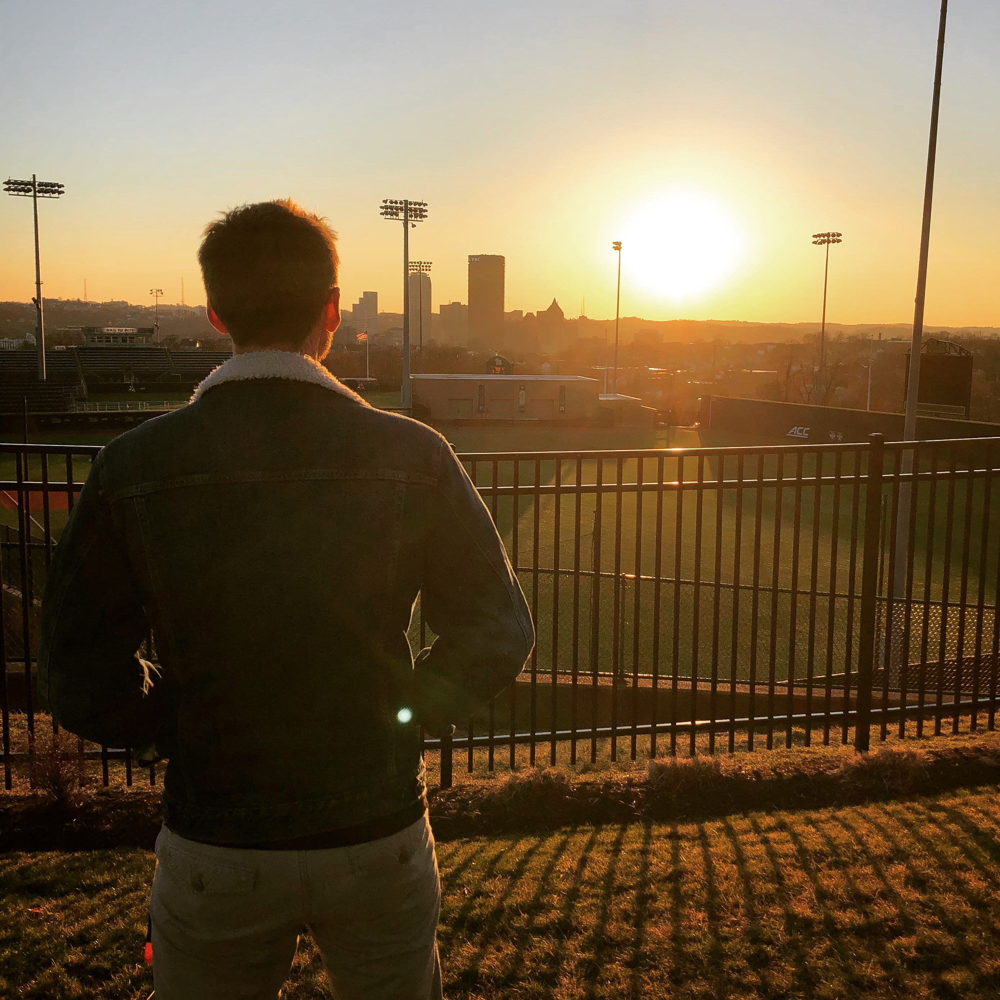
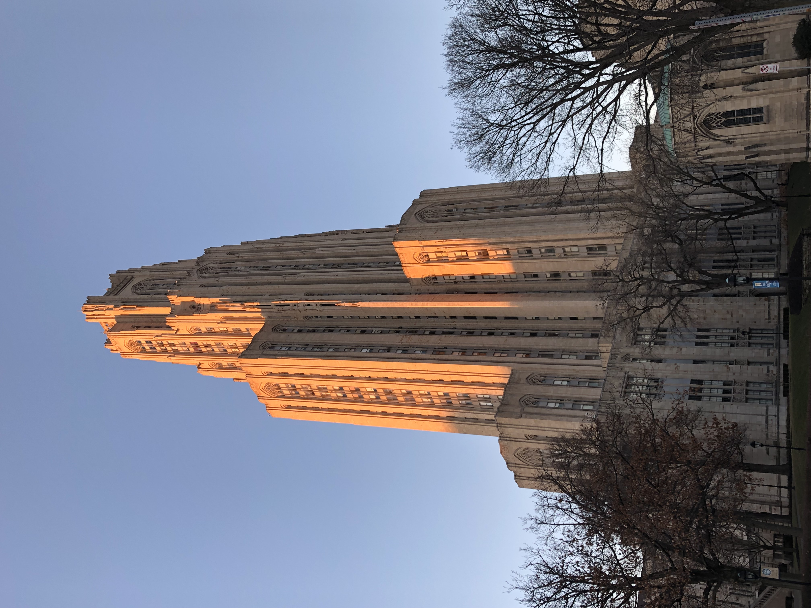

My Name is Anthony Pascarella
And I'm Majoring in Digital Narrative and Interactive Design
Field or Career
Writing, to me, is perhaps one of the most human fields of study. Each word written on a page was carefully chosen by somebody for a specific purpose. Each passage has its own style, its own voice, depending on who wrote it. Most importantly, writing allows us the infinite ability to explore anything we want. There's no shame in it; it's our own voice, given form on a page. Whether it's writing a massive book or simply jotting down a few quick notes on a spare scrap of paper, those words are a testament to our lasting ability to articulate our thoughts and feelings in a way that is completely our own. I think it is that beauty that drew me writing in the first place. It was a space completely my own, where I was free to take risks, to make mistakes. It seems only natural that I follow that path into my career, making a living out of making art.
Family and Home






When I was younger, I thought family was strictly those who you're related to. I thought "love" could only refer to someone who shared a relative with you, until you were old enough to get married. But the odler I got, the more I realized this simply isn't true. Family is more than just blood. It can definitely be a part, sure, but it is not exclusive. Family has come to include anyone that I care deeply about, so much that it hurts sometimes when I am not around them. It is anyone whom I would give anything to just to make them happy. I don't use "I love you" lightly. I reserve it only for those I consider family.

Entertainment
I know this video is a super nerdy choice, but I remember being blown away after watching it in my seventh grade science class. My teacher was pretty eccentric and he was a huge proponent of using technology for the good of scientific study. He championed using iPads on projects, using laptops to take notes, using smartphone apps to gather data. This video was meant to give our young, middle school minds a look at the possibility of technology in the near future. Ever since then, I have been obsessed with the development of technology. I came to Pitt thinking I wanted to major in computer science, but I soon learned that the coding life wasn't exactly for me. After having minor existential crisis, I was introduced to the Digital Narrative and Interactive Design major, which blended what I loved about computer science and digital design with English and creative writing. I fell in love with the possibilities the major offered, and I haven't looked back since.
Community
I don't think I ever gave this question much thought before. I've never felt like I belong to any one "community", in the sense that it is presented here. I went to high school with other kids in my area. I go to college now with people from all over the world, tied together by the common theme of our shared university. I tend not to tie myself down to one description, to one "community". I belong to many, I suppose. My friends, for sure, both those from home and here at Pitt. My family, especially since we've spent so much time over the past few months under the same roof. Aside from that, I don't go out of my way to socialize much. My interests and hobbies are pretty niche, so it sometimes isn't easy finding people that share them. Usually, I turn to those within my friend or family circles. Does it bother me that I'm not part of a rigid, structuralized community? Sometimes, but not really. I tend to make my own path in life, when possible. I've found that it takes away some of the pressure of fitting in.

School
I've always been the bookish kid, ever since preschool. I remember spending a lot of our dedicated playtime pretending I was writing novels, or memos, or emails like my mom does all the time when she works from home. My parents always pushed both my sister and I to put our education above everything else. Sometimes, having that drive was nice. We always had their support when it came to schoolwork. Other times, it could become quite overwhelming. I didn't let it faze me, though. I always pushed myself to be better, even when the role of my parents lessened as I grew older. In elementary school, I always studied for the spelling bees. I always completed my work on time and made sure it was done to the best of my abilities. In high school, I devoted time to studying and completing projects. I always took advanced classes, earning credits before I even entered college. And now that I'm here, a place in time that a younger me could scarcely conceptualize, let alone imagine, I feel as if it all paid off. Sure, I'm not an engineering student, nor am I pursuing medicine, but to me, eductaion is more than just perserveering through the difficulty of your classes. True education, something that I feel is rare in many classes, is enjoying the process of learning. It's voluntarily engaging in subjects that interest you, that drive you to constantly do better, to be better. Even though the road to where I sit now is long and riddled with many challenges, I think the outcome will be worth it.

generated by the Pitt Fuego
“Why make a spark when you can light a fire?